Tiling
Wall and floor tiling with careful alignment and clean finishes.
High-quality residential and commercial renovations. Exceptional craftsmanship, reliable service and attention to every detail.
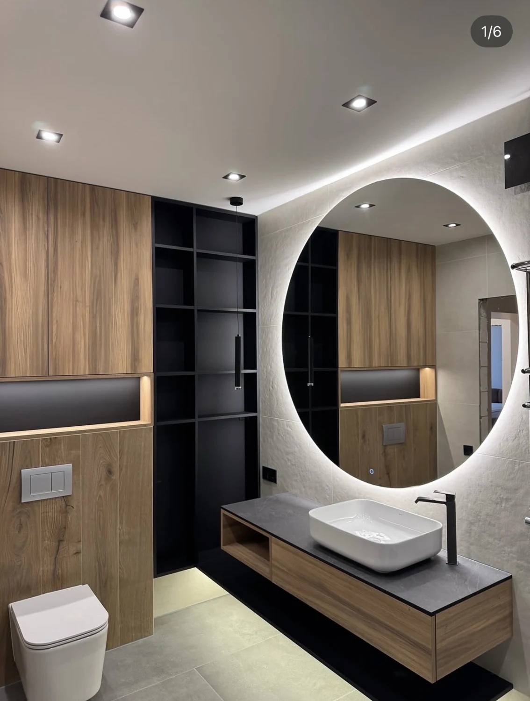
From upgrading a single room to transforming an entire property, we help bring your vision to life.
Wall and floor tiling with careful alignment and clean finishes.
Interior and exterior painting to refresh your property.
Floor installations and upgrades for practical, attractive spaces.
Ceiling installations and contemporary finishing details.
Plumbing improvements for kitchens, bathrooms and other spaces.
Transform everyday spaces with functional layouts and modern finishes.
From single-room upgrades to whole-home improvements.
Professional improvements for offices and business premises.
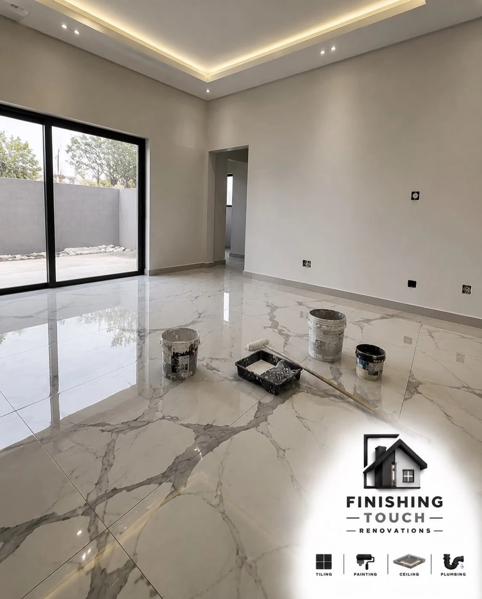
At Finishing Touch Renovations, we specialise in high-quality residential and commercial renovations, delivering exceptional craftsmanship with meticulous attention to every detail.
Whether you are upgrading a single room, renovating your office or transforming an entire property, we are committed to quality workmanship, reliable service and results that stand the test of time.
Because every project deserves the perfect finishing touch.Explore renovation details, installations and work in progress. Select any photograph to view it in full.
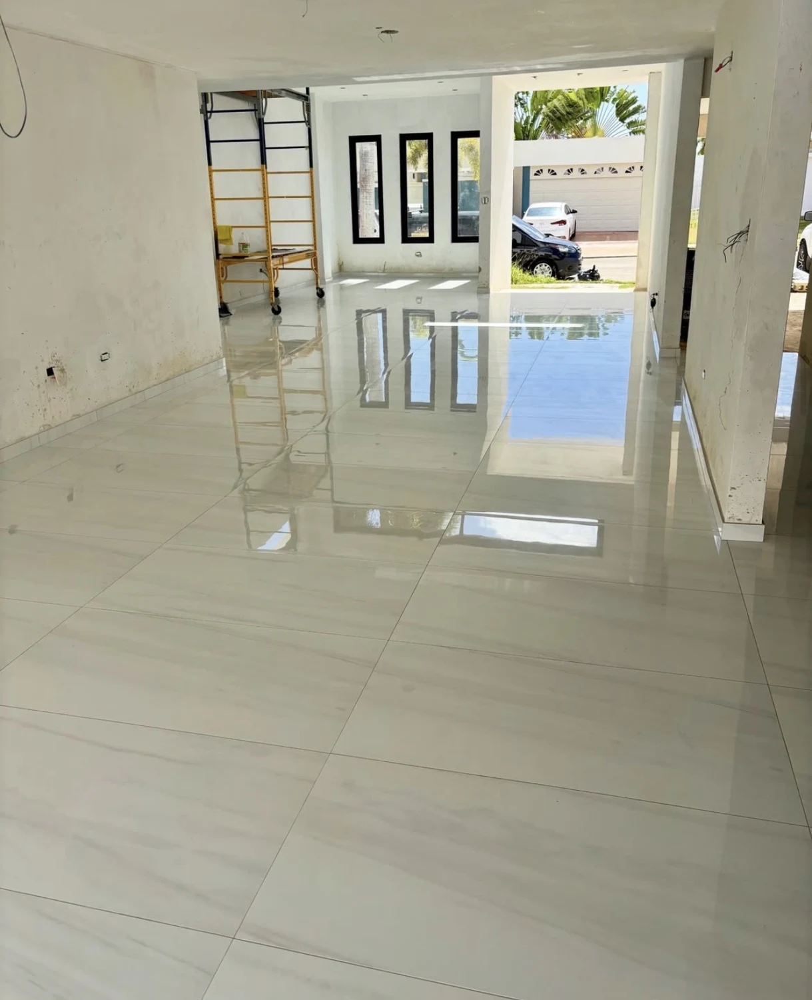
Polished floor tiling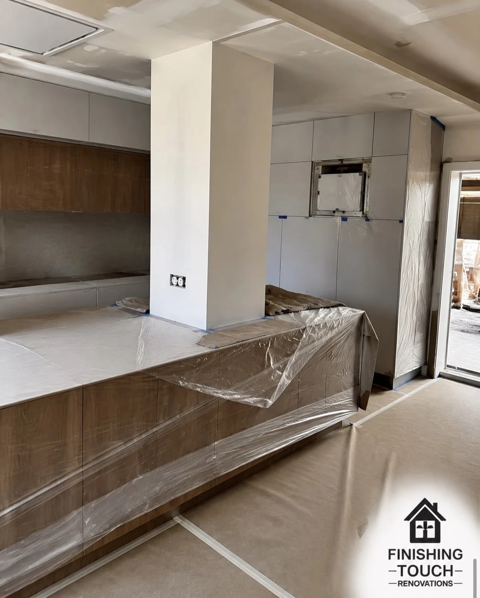
Kitchen renovation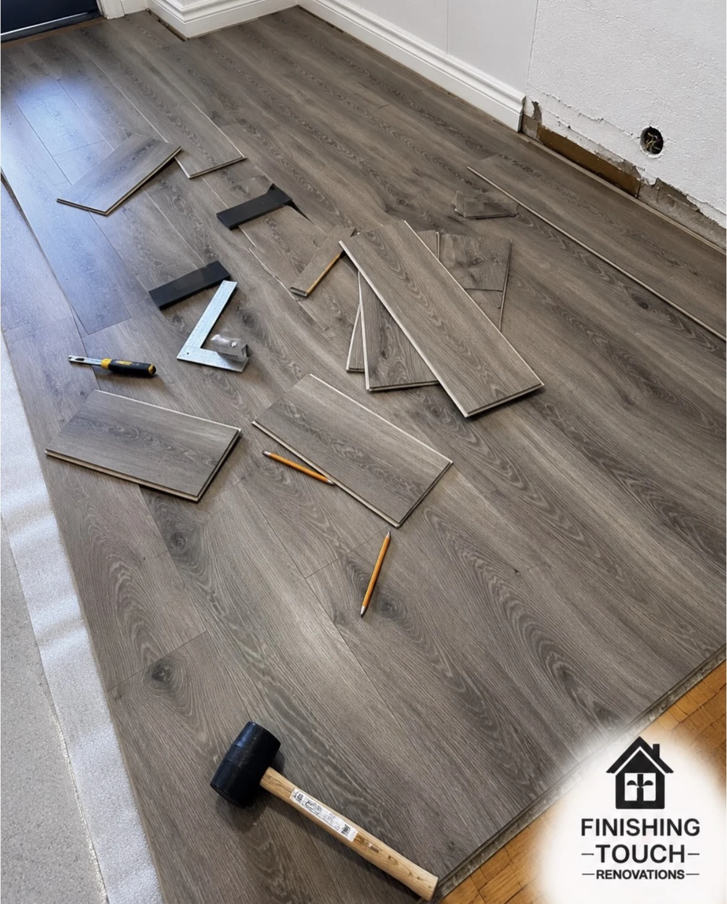
Wood-look flooring installation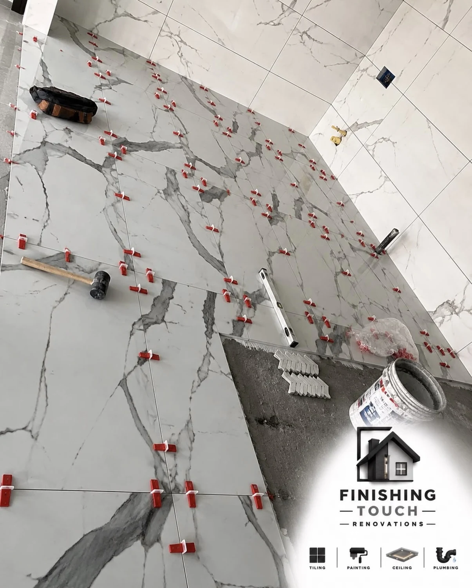
Large-format marble-effect tiling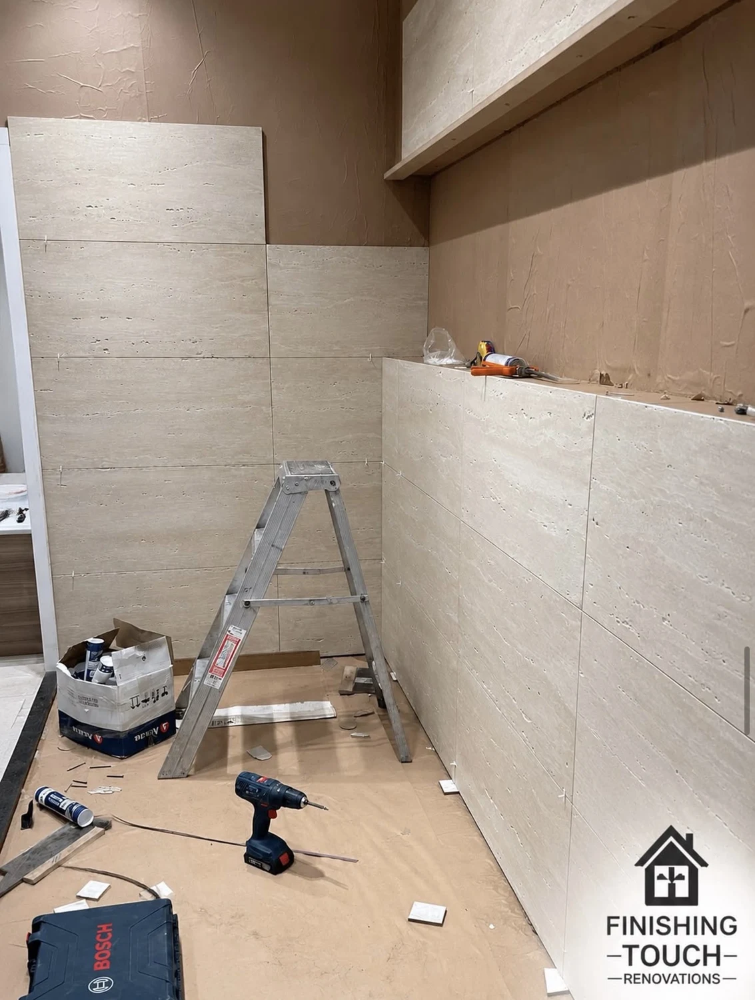
Wall tile installation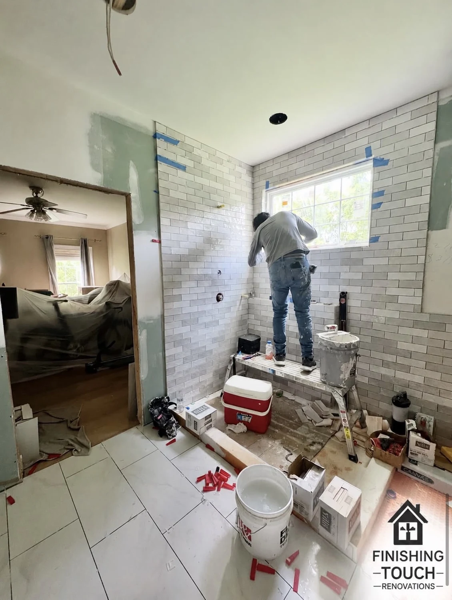
Bathroom tiling in progress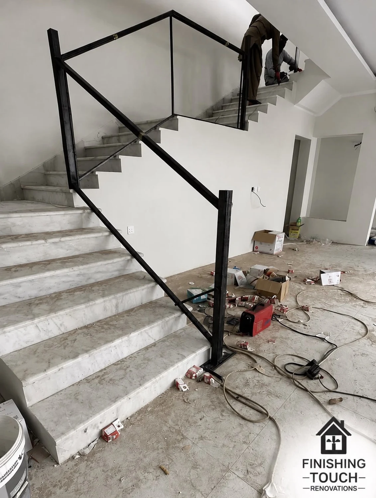
Staircase renovation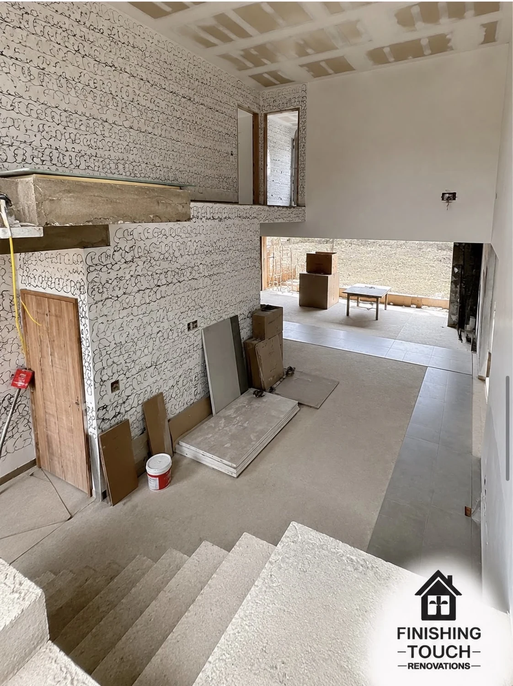
Interior renovation in progress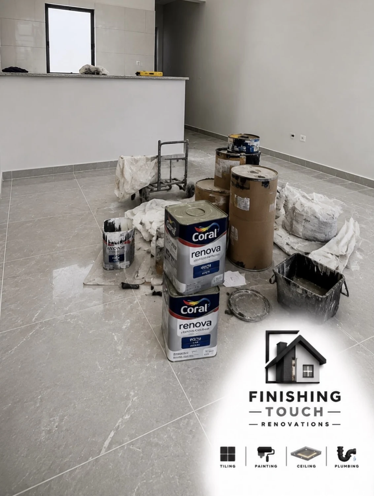
Painting and floor finishesTell us about your project and request a free quotation.
Chat on WhatsAppWhatsApp: +27 76 904 0384
Instagram: @finishing_touch_renovations
Serving Johannesburg, Sandton and surrounding areas.